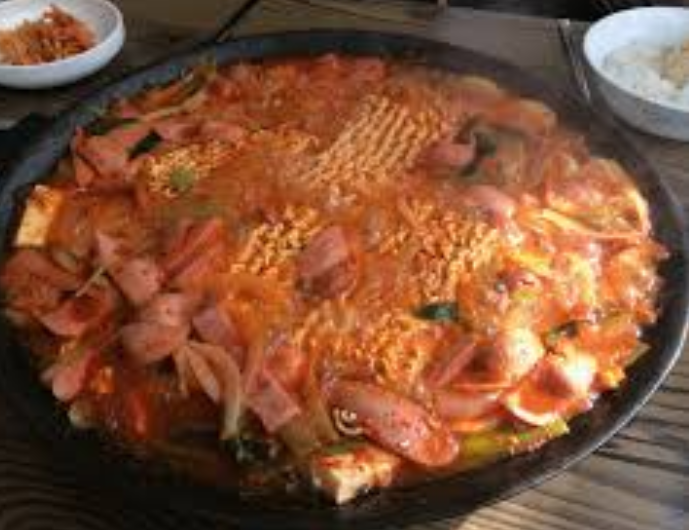

한끼철판
한끼철판은 원래 꼬꼬스테이크 집이였는데 사장님이 어두운 미래를 보고 빠르게 업종변환을 한 가게이다. 사진과는 약간 다르게 나오기는 하는데 밥이 엄청 많고 맛도 나쁘지 않아서 가성비면에서는 괜찮다고 생각을 해서 1.5티어가 되었다.
노랑통닭
노랑통닭은 모두가 잘아는 프렌차이즈 닭집인데 저 3종세트가 맛있어서 4성으로 했다. 단점이라고 하면 석계역 거의 옆이라서 좀 멀다는점?
무명칼국수
칼국수 중에서 제일 맛있는 우리의 이름없는 칼국수. 석계역 가는길에 있는 칼국수 집인데 이상하게 광운대 학생들은 잘 모르는 맛집중에 하나이다. 다이닝코드라는 빅데이터 맛집 분석기에서도 순위권을 다투는 맛집인데 ㅠㅠ 여기는 닭칼국수 해물칼국수 만두 이렇게 3개만 파는데 개인적으로 닭칼국수가 제일 맛있는것 같다. 그리고 김치 또한 예술이라서 가면 마치 에피타이저 샐러드처럼 먹게되는 자신을 보게된다. 주말 점심에 가면 가족들이 매우 많으니 자리가 부족할 수도 있다.
윤스쿡
여기는 돈까스 집으로 유명한데 내입에는 직화제육이 더 맛있어서 그걸로 사진을 했다. 직화제육하고 돈까스 등을 파는데 직화제육에서 아주아주 맛있는 불맛이 난다. 돈까스 또한 괜찮은데 학교 근처 돈까스 집에서는 제일이라고 할 수 있겠다.
오네스토테이블
우리가 상상하는 소개팅에서 먹을듯한 가게이다. 맛또한 괜찮고 분위기도 매우 괜찮은 집이다. 단지 문제가 있다면 먹다보면 좀 느끼해서 김치가 먹고싶을것이다. 그러면 무명칼국수의 김치가 맛있으니 다음 식사로 무명을 먹는것은 어떨까? 여튼 이곳은 가격이 좀 쎄지만 가끔씩 돈을 쓰고 싶을때 오기 좋다. 빠네파스타를 추천!
피자헤븐
피자가 먹고싶은데 메이저 피자들은 너무 비싸다고 생각될때 먹기 좋은 피자집이다. 맛도 좋고 양도 괜챃고 가성비도 좋은 가게로 학교 근처 피자집에서 제일 괜찮은것 같다. 개인적으로 새우를 좋아해서 쉬림프 피자 추천
츄러스
가게 이름을 잘 모르겠다. 동해문화예술관 아래 있는 츄러스 집인데, 사실 그렇게 싸지는 않다. 츄러스 한개에 2000원인데 그냥 롯데월드 이런데 츄러스 생각하다보면 가격이 매우 괜찮은 것 같은 환상에 빠져서 먹게된다. 츄러스가 먹고싶을 때 학교근처에서 먹을수 있어서 4성을 주었다.
정육식당
학교에서 월계쪽으로 가다보면 있는 정육식당이다. 여기는 가격대가 좀 쎈걸로 기억된다. 600g에 2~3만원정도 되는 가격이므로 출혈을 각오하고 가야한다. 사실 여기 갈 빠에 화로상ㅎ..........
고기가 고깃집으로서는 상위권에 드는 맛이다. 동아리 모임장소로 추진해보자. 졸업선배들은 돈이 많다.
고기가 고깃집으로서는 상위권에 드는 맛이다. 동아리 모임장소로 추진해보자. 졸업선배들은 돈이 많다.
3.3카츠
학교에 중도가 새로 지어지면서 나온 푸드코드이다. 여기서 돈카츠 세트를 3300원에 팔고있는데 내가 많이 먹어서 그런지 몰라도 여기에 덮밥까지 시켜도 배가 고프다. 자신이 다이어트를 하고싶거나 소식을 한다면 여기서 밥을 먹자. 돈을 아낄수 있다. 근데 다이어트하는데 왜 튀김을 먹지
멜팅버거
새로생긴 수제버거 집이다. 2500원이라는 저렴한 가격에 맛있는 햄버거를 먹을수 있다. 신기하게도 빵이 되게 쫄깃쫄깃 하다고 해야하나 다른 햄버거와는 다른 빵의 맛을 느낄수 있다. 가격을 더 추가하면 더블 패티 버거 이런거 시킬수 있는데 그냥 기본 멜팅버거 2개먹도록 하자.
이층집

부대찌개 집으로서 가성비가 괜찮은 집 중 하나이다. 내 기억이 맞다면 광운대 근처에 놀부 부대찌개라고 있었던 것 같은데 가본적이 없으니 학교 근처 부대찌개중에서는 제일 맛있다. 왜냐면 이것밖에 안먹어봤다. 그리고 아마 밥도 무한리필이였던것 같은데 자신이 좀 많이 먹는다 싶으면 여기가서 장사를 망치고 오자!
소담한식
아니 소담한식 사진이 없네 제육볶음 사진으로 대체. 광운대 근처에 있는 밥집인데 사실 사람들이 오는거 귀찮아서 아무도 모르게 지어논 식당이다. 가면 제육볶음 순두부 찌개를 파는데 제육이 매우 매우 맛있다. 단지 문제는 진짜 길이 미로같이 있어서 여기 들어갔다가 석병팔진에 당한 사마의처럼 길을 헤매다가 공강을 날릴수가 있으니 좌표를 잘찍고 갈것
명량핫도그
광운대역 앞에 있는 명량핫도그, 그리고 잘뒤지면 석계역에 가는길에 하나 더있다. 맛은 우리가 아는 그 핫도그가 맞다. 사실 내가 치즈 핫도그를 좋아해서 추가했다. 집에가는 길에 하나 또 사먹어야 겠다.
언니브리또동생떡볶이
여기는 무려 무한리필 되는 떡볶이 집이다. 가면 5000원만 주고 떡볶이를 무한으로 먹을수 있기 때문에 엽떡과 신떡의 횡포에 지친 메마른 가슴에 촉촉한 이슬이 되어줄 있다. 재료는 자기가 선택하는 것이기에 가서 긴떡을 마구 넣어서 마치 우동처럼 먹으면 매우 맛있다. 단지 돼지가 되는건 자기의 선택이니 적당히 먹자. 브리또는 안먹어봤다 ㅎㅎ
맘스터치
버거킹과 함께 햄버거의 세계를 양분하는 맘스떼치, 석계역 옆에 있으며 맘스터치인데 무슨 말이 필요하겠는가. 게다가 여기는 무려 배달도 햄버거 집이다. 단지 문제가 있다면 16000원이상을 사야하는데 보통 가격이 5000원인데 햄버거 3개정도 시켜야 배달이 가능하다. 자신이 친구가 없다면 자신의 포텐셜을 믿으면서 배달을 시켜보자. 개인적으로 버거킹을 더 좋아해서 4성
돈장군
숯불 고기를 파는 고기집이다. 사실 여기는 화로상회가 생기고나서 사람들이 여기를 갈 이유를 잃어서 아마 거의 사람이 없지 않을까 라는 생각을 한다. 화로상회가 생기기전에 몇번갔었는데 고기가 맛있고 숯불도 좋은 숯불을 쓰는 맛있는 고기집이다.
서초우동
가격이 매우 싼 우동집이다. 여기서 김밥과 비빔우동까지 사면 6000원 정도인데 둘이 같이 먹으면 어마어마하게 맛있다. 게다가 우동자체도 상당히 가격이 싸기 때문에 학교 일찍와서 광운대역에서 내려서 이거 먹고 학교를 가는 좋은 방법도 있는데 난 항상 지각해서 못해봤다.
썬더치킨
썬더썬더, 우리가 아는 그 썬더치킨이다. 근데 여기 썬더치킨은 양이 매우매우 창렬해서 순살을 시키면 한마리를 먹어도 마치 병아리 한마리를 먹은듯한 그런 느낌이 난다. 그래도 내가 좋아하는 치킨이라서 4성
진미통닭
되게 허름해보이는 치킨집이다. 그렇지만 여기 양념치킨이 매우 맛있기 때문에 4성 준다. 여기서 양념치킨을 시키고 먹다보면 뭔가 되게 싱겁다는 느낌을 받는데 소금을 달라고 해서 찍어먹으면 되게 맛있다. 단지 이렇게 먹으면 심장 죽이기 딱 좋아서 먹다보면 심장이 아픈듯한 그런 느낌이 온다.
밥은
광운대 최상급 덮밥집. 여기 처음에 생겼을때 놀랍게도 웨이팅 줄이 있었다. 광운대에서!! 그만큼 되게 맛있고 그 김치가 중국산인데 뭔가 덮밥의 느끼함을 잘잡아줘서 매우 훌륭한 밥집이다. 매우매우 추천
매운족발
다른 학교사람들도 알고 있는 바로 그 맛집! 매운족발이다. 매족이 2개가 있는데 안쪽으로 들어가서 있는 곳이 맛있다. 여기서 매족하나에 주먹밥 시켜서 먹으면 술술 잘넘어간다. 단지 5성이 아닌 이유는 내가 매운거 잘 못먹어서 이거먹으면 다음날 배탈나서 1성 하락했다.
수부기
포장, 배달만 되는 곳으로 피자 떡볶이 치킨을 판다. 즉 돼지가 되는 가장 좋은 지름길이다. 가성비는 매우 훌륭해서 떡볶이랑 치킨 해서 18000원이였나 그랬는데 사람들 모아서 이거 시켜먹으면 매우 맛있다. 자취하는사람들이라면 이거 시키면 하루는 먹지 않을까 라는 생각이 든다.
수육국밥
국밥집중에서 우리학교 최고라고 생각이 될정도로 맛있다. 내가 부산에 여행갔을때 먹었던 돼지국밥 맛집보다 맛있었으니깐 뭐 최고라고 생각한다. 여기 부추도 되게 맛있으니깐 부추를 많이 먹자. 부추는 피를 맑게한다. 여튼 내생각에는 진국보다 맛있는 밥집
쌈
광운대 유일한 샤브샤브 집이다. 여기 진짜 맛있긴 한데 사장님이 너무 불친절해서 사람들이 안오는곳 같다. 샤브샤브를 좋아한다면 매우 괜찮은 집이다. 국물에 칼국수 밥냠냠까지 완벽하니깐 맛집을 찾는다면 가보자.
대장금 칼국수
곱창하고 칼국수 파는집인데 곱창이 가성비가 매우 훌륭하다. 그리고 사장님이 자꾸 뭘 퍼줘서 배터지게 먹고 올수 있다. 다이닝 코드에 치면 바로 나올정도에 맛집이다. 사실 칼국수는 무명이 더맛있다.
오늘의 밥집